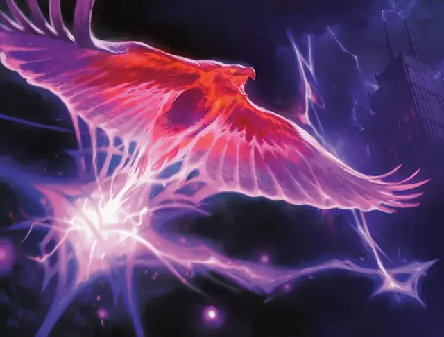

Дуговой Феникс
Arclight Phoenix
Средний Элементаль, хаотично-нейтральный

Класс Доспеха 16
Хиты 142 (19к8 + 57)
Скорость 0 футов, летая 120 футов
| мод | спас | ||
|---|---|---|---|
| СИЛ | 15 | +2 | +2 |
| ЛОВ | 22 | +6 | +10 |
| ТЕЛ | 17 | +3 | +3 |
| мод | спас | ||
|---|---|---|---|
| ИНТ | 5 | −3 | −3 |
| МДР | 12 | +1 | +1 |
| ХАР | 7 | −2 | −2 |
Сопротивление урону звук; дробящий, колющий, рубящий от немагических атак
Иммунитет к урону электричество, яд
Иммунитет к состояниям бессознательность, захват, истощение, окаменение, опутанность, отравление, паралич
Чувства тёмное зрение 60 футов, пассивное Восприятие 11
Опасность 12 (8400 опыта)
Бонус мастерства +4
Особенности
Облёт. Феникс не провоцирует атаки, когда вылетает из досягаемости врага.
Заземлённая молния. Когда феникс, впервые за ход, касается земли, ему наносится 11 (2к10) урона силовым полем.
Свечение. Феникс испускает яркий свет в пределах 15-футового радиуса и тусклый свет в пределах ещё 15-ти футов.
Форма молнии. Феникс может перемещаться в пространстве шириной до 1 дюйма, не протискиваясь. Существо, касающееся феникса или поражающее его рукопашной атакой, находясь в пределах 5 футов от него, получает 9 (2к8) урона электричеством. Кроме того, феникс может войти в пространство враждебного существа и там остановиться. В первые за ход, когда феникс входит в пространство существа, это существо получает 9 (2к8) урона электричеством.
Потрескивающая смерть. Когда феникс дуги света умирает, он взрывается. Каждое существо в пределах 30 футов от него должно совершить спасбросок Ловкости Сл 18, получая 36 (8к8) урона электричеством при провале или половину этого урона при успехе. Взрыв уничтожает феникса, но оставляет крошечное тёплое яйцо со скорлупой из миззиума.
Яйцо содержит эмбрион нового феникса дуги света. Оно вылупляется, когда находится в области действия заклинания, наносящего урон электричеством, или если существо касается яйца и расходует ячейки заклинаний, суммарный уровень которых равен 13 или выше. Когда оно вылупится, яйцо выпускает нового феникса дугового света, который появляется в пространстве яйца.
Действия
Дуговое касание. Рукопашная атака оружием: +10 к попаданию, досягаемость 5 фт., одна цель. Попадание: 27 (6к8) урона электричеством, и молния прыгает от цели к одному существу по выбору феникса, которое он может видеть в пределах 30 футов от цели. Это второе существо должно преуспеть в спасброске Ловкости Сл 18, иначе получит 27 (6к8) урона электричеством.
Описание
Фениксов дуги света называют побочным продуктом удара молнии в вольер, неудачной попыткой создать устройство для перемещения или успешной попытки создать элементальное существо в форме величественной птицы.
Каким бы ни было его происхождение, феникс дуги света выглядит как хищная птица, полностью состоящая из электрической энергии. Молния веет позади него, когда он мчится с места на место по небу, компенсируя своей скоростью то, чего ему не хватает в гонке и величии. Он кажется самым счастливым во время естественных гроз, когда он носится среди облаков, скользя рядом с ударами молнии.
Элементарная природа. Феникс Дуги Света не нуждается в воздухе, еде, питье или сне.